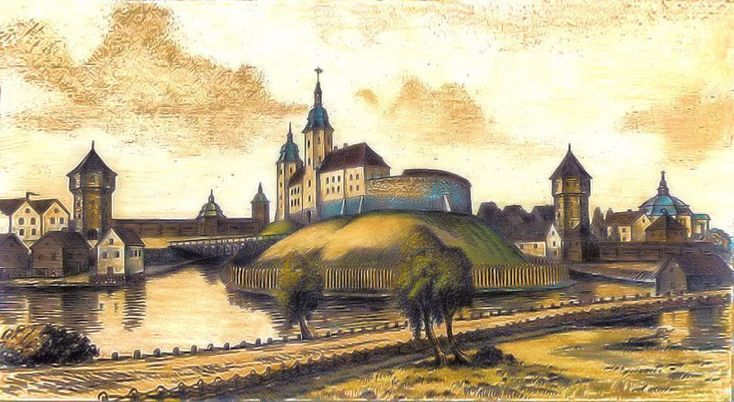
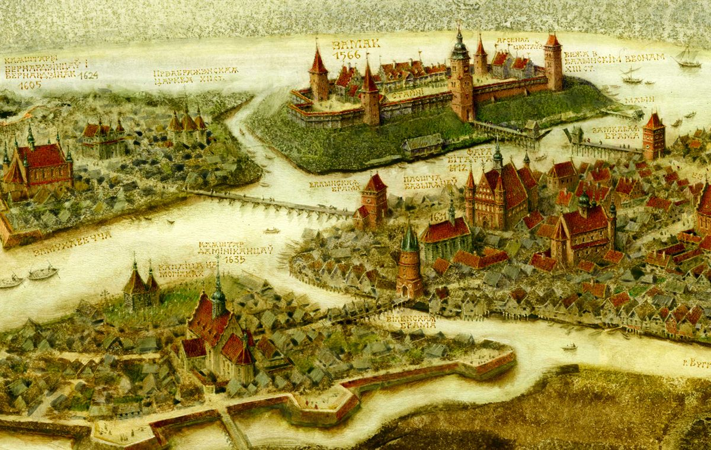
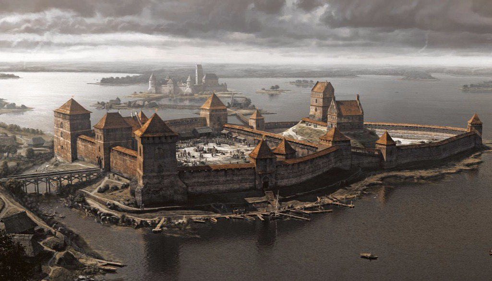
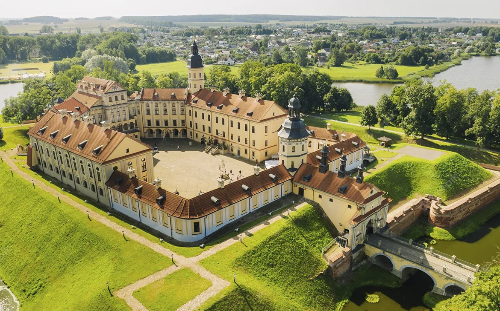
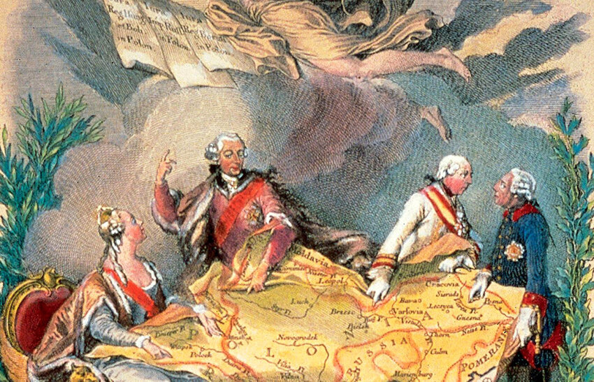
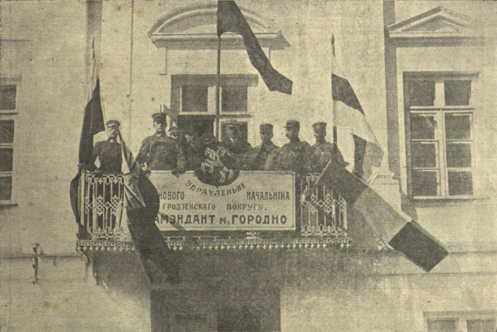
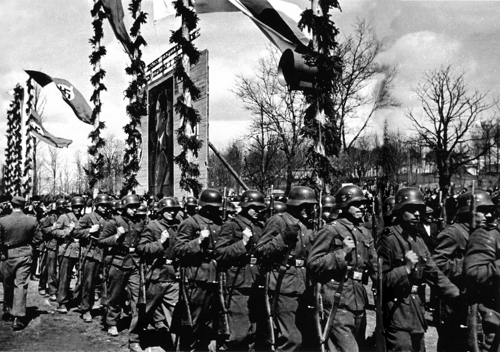
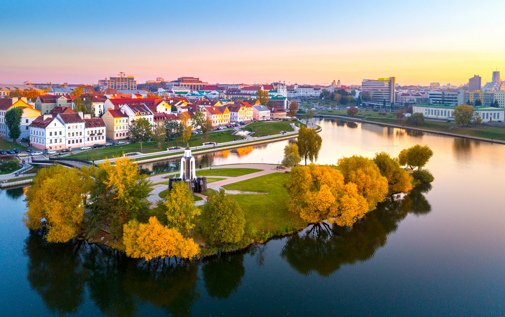

Старажытная Беларусь
Першыя паселішчы на тэрыторыі сучаснай Беларусі з’явіліся яшчэ ў каменным веку. Людзі жылі паляваннем і збіральніцтвам, а пазней перайшлі да земляробства і жывёлагадоўлі. Археалагічныя знаходкі сведчаць пра існаванне развітых культур яшчэ ў 3-м тысячагоддзі да н.э.
Кіеўская Русь і Полацкае княства
З IX стагоддзя тэрыторыя Беларусі ўваходзіла ў склад Кіеўскай Русі. Полацкае княства стала адной з самых магутных дзяржаў Усходняй Еўропы. Полацк быў цэнтрам культурнага і эканамічнага жыцця, а яго князі, такія як Усяслаў Чарадзей, адыгралі важную ролю ў гісторыі рэгіёна.
Вялікае Княства Літоўскае
У XIII стагоддзі Беларусь стала часткай Вялікага Княства Літоўскага (ВКЛ). Гэтая дзяржава была адной з найбуйнейшых у Еўропе і займала тэрыторыю ад Балтыйскага да Чорнага мора. У ВКЛ беларуская мова стала дзяржаўнай, а ў 1529 годзе быў прыняты першы Статут ВКЛ, які рэгуляваў законы краіны.
Рэч Паспалітая і ўплыў Польшчы
Пасля Люблінскай уніі 1569 года ВКЛ аб'ядналася з Каралеўствам Польскім у Рэч Паспалітую. У гэты перыяд на беларускія землі прыйшла польская культура, каталіцтва, але таксама ўзмацнілася прыгнечанне праваслаўнага насельніцтва. Нягледзячы на гэта, беларускія гарады квітнелі, а магнаты, такія як Радзівілы, будавалі велічныя замкі і палацы.
Падзелы Рэчы Паспалітай і Расійская імперыя
У канцы XVIII стагоддзя Рэч Паспалітая была падзелена паміж Расіяй, Аўстрыяй і Прусіяй. Беларуская тэрыторыя апынулася ў складзе Расійскай імперыі. У гэты час беларуская мова і культура падвяргаліся русіфікацыі, але народ захоўваў сваю самабытнасць праз фальклор, літаратуру і традыцыі.
Беларусь у XX стагоддзі
XX стагоддзе прынесла Беларусі вялікія выпрабаванні. Падчас Першай сусветнай вайны тэрыторыя Беларусі стала полем жорсткіх баёў. Пасля рэвалюцыі 1917 года была абвешчана Беларуская Народная Рэспубліка (БНР), але хутка яна была ліквідавана савецкай уладай, і Беларусь стала часткай СССР.
Падчас Вялікай Айчыннай вайны Беларусь апынулася пад нямецкай акупацыяй. Загінуў кожны трэці жыхар краіны, але беларускі народ аказаў гераічнае супраціўленне. Пасля вайны Беларусь аднавіла эканоміку і стала адной з самых развітых рэспублік СССР.
Незалежнасць і сучаснасць
У 1991 годзе Беларусь атрымала незалежнасць. Сёння краіна актыўна развіваецца, захоўваючы сваю культуру і традыцыі. Мінск стаў сучасным мегаполісам, а старадаўнія гарады, такія як Віцебск, Гродна і Брэст, прыцягваюць турыстаў сваёй гісторыяй і архітэктурай.
